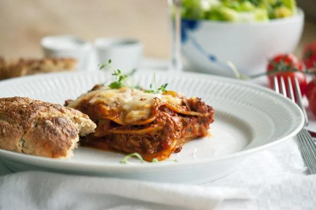

Home made lasagna

Here is the finished result: A delicious piece of lasagna
This recipe of a home made lasagna is very delicious. I have made this serveral times and there is always enough food for a couple of days if you are just you - or be enough for a meal for 4 grownups. It can easily be frozen down.
I change the recipe occasionally if I find some better ingredients, so check in regularly to get the best recipe of my home made lasagna ;).
Ingredients:
Meat sauce:
- 2 onions, finely chopped
- 4 cloves of garlic, finely chopped
- 400 g of ground beef
- 2 tps of oregano
- 1 tps of thyme
- 4 carrots, chopped
- 5 stems of celery, grated
- 1 squash, grated
- 1 dl tomato puree
- 2 cans of chopped tomatoes
- 1 dl of vegetable boullion
- 2 tbsp olive oil
- salt and freshly ground pepper
Mornay sauce:
- 2 tbsp butter
- 2 tbsp flour
- 3 dl milk
- 1 pinch of grated nutmeg
- 125 g of french mozarella
The rest:
- 200 g lasagna noodles
- 125 g fresh mozarella
Steps for preparing the lasagna
Turn up the oven to 175 degrees Celcius.
- Meat sauce:
Sauté garlic and onions in olive oil until they become transparent. Add the beef and fry it until it turns brown. Turn down the heat and add the rest of the ingredients. Let the sauce simmer for 2 to 6 hours (the longer, the better taste). Taste the sauce continuously.
- Mornay sauce:
Melt the butter in a pot, add flour and whisk it into an even ball. Add the milk slowly while whisking until the consistency is like a sauce. Add cheese and whisk until it's melted. Seasoning the sauce with nutmeg, salt and pepper.
- Gather the lasagna:
Add a layer of Mornay sauce in a coocking dish that has been prepared with a thin layer of butter and a tablespoon of flour. Add a layer of meat sauce and lasagna noodles and continue adding layers of mornay sauce, meat sauce and noodles and finish it off with a layer of mornay sauce. Add grated mozarella cheese on top. Put the dish in the oven and bake it for 20 to 25 minutes. The lasagne should be tender with a bite (the lasagna noodles). Bon Appetit!
The original recipe can be found in Danish at: https://www.valdemarsro.dk/lasagne/.